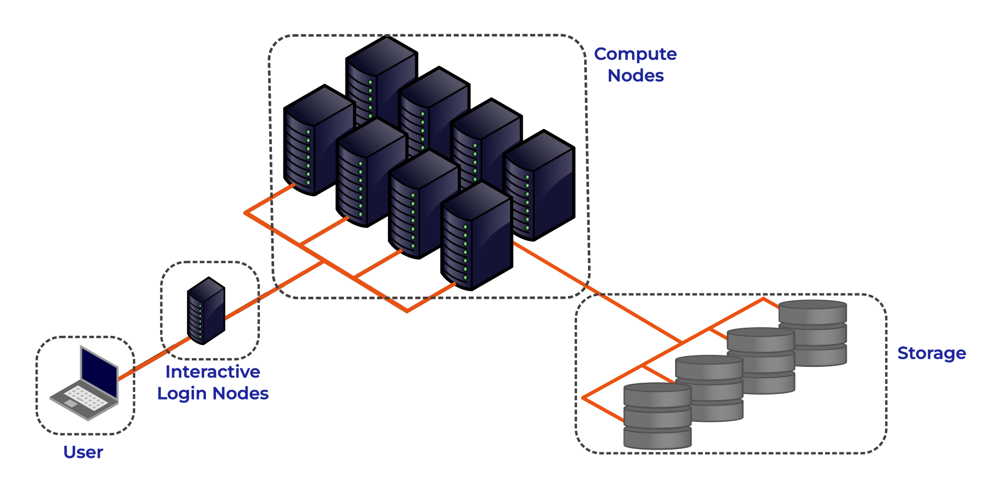

All in One View
Content from Introduction to HPC Systems
Last updated on 2026-08-03 | Edit this page
Overview
Questions
- What is a High Performance Computing cluster?
- What is the difference between an HPC cluster and the cloud?
- How can an HPC cluster help me with my research?
- What HPC clusters are available to me and how do I get access to them?
Objectives
- Describe the purpose of an HPC system and what it does
- List the benefits of using an HPC system
- Identify how an HPC system could benefit you
- Summarise the typical arrangement of an HPC system’s components
- Differentiate between characteristics and features of HPC and cloud-based systems
- Summarise the capabilities of the NOCS HPC facilities
- Summarise the key capabilities of Iridis 6 and Iridis X for NOCS applications
- Summarise key capabilities of national HPC resources and how to access them
High Performance Computing
High Performance Computing (HPC) refers to the use of powerful computers and programming techniques to solve computationally intensive tasks. An HPC cluster, or supercomputer, is one which harnesses the aggregated power of groups of advanced computing systems. These high performance computers are grouped together in a network as a unified system, hence the name cluster. HPC clusters provide extremely high computational capabilities, significantly surpassing that of a general personal computer.
HPC clusters fundamentally perform simple numerical computations, but on an extremely large scale. In our examples we can see where HPC clusters excel, using hundreds or thousands of processors to complete a numerical task that would take a desktop or laptop days, months or years to complete. They can also tackle problems that are too large or complex for a PC to fit in their memory, such as modelling the ocean dynamics or the Earth’s climate.
High Performance Computing allows you as researchers to scale up your computational research and data processing, enabling you to do more research or to solve problems that would be infeasible to solve on your own computer.
HPC vs PC
Before we discuss High Performance Computing clusters in more detail let’s start with a computational resource we are all familiar with, the PC:
PC
|
Your PC is your local computing resource, good for small computational tasks. It is flexible, easy to set-up and configure for new tasks, though it has limited computational resources. Let’s dissect what resources programs running on a laptop require:
|
If Our PC isnt Powerful Enough?
When the task to solve becomes too computationally heavy, the operations can be out-sourced from your local laptop or desktop to elsewhere.
Take for example the task to find the directions for your next conference. The capabilities of your laptop are typically not enough to calculate that route in real time, so you use a website, which in turn runs on a computer that is almost always a machine that is not in the same room as you are. Such a remote machine is generically called a server.
The internet made it possible for these data centers to be far remote from your laptop. The server itself has no direct display or input methods attached to it. But most importantly, it has much more storage, memory and compute capacity than your laptop will ever have. However, you still need a local device (laptop, workstation, mobile phone or tablet) to interact with this remote machine.
There is a direct parallel between this and running computational workloads on HPC clusters, in that you outsource computational tasks to a remote computer.
However there is a distinct difference between the “cloud” and an HPC cluster. What people call the cloud is mostly a web-service where you can rent such servers by providing your credit card details and by clicking together the specs of a remote resource. The cloud is a generic term commonly used to refer to remote computing resources of any kind – that is, any computers that you use but are not right in front of you. Cloud can refer to machines serving websites, providing shared storage, providing web services (such as e-mail or social media platforms), as well as more traditional “compute” resources.
HPC systems are more static and rigidly structured than cloud systems, and follow consistent patterns in how they’re deployed, whereas cloud infrastructures tend to be much more flexible and “user-led” in their configurations and provisioning.
HPC Cluster
If the computational task or analysis is too large or complex for a single server, larger agglomerations of servers are used. These HPC systems are known as supercomputers, or described as HPC clusters as they are made up of a cluster of computers, or compute nodes.
Distinct to the cloud, these clusters are networked together and share a common purpose to solve tasks that might otherwise be too big for any one computer. Each individual compute node is typically a lot more powerful than any PC - i.e. more memory, many more and faster CPU cores. However in parallel to the cloud you access HPC clusters remotely, through the internet.
The figure below shows the basic architecture of an HPC cluster.

Lets go through each part of the figure:
Interactive Login Nodes
When you are given an account on an HPC cluster you will get some login credentials. Using these credentials you can remotely log-on to of the interactive login nodes from your local PC over the internet. There may be several login nodes, to make sure that all the users are not trying to access one single machine at the same time.
Once you have logged onto the login node you can now run HPC workloads, or jobs, on the HPC cluster. BUT you typically do not directly access the CPU/GPU cores that do the hard work. Supercomputers tend to operate in batch mode, where you submit your workload to a resource manager which places it in a queue (resource management and job submission will be discussed in more detail later). The login node is where you prepare and submit your HPC jobs to the queue to be scheduled to run.
The login nodes are used for:
- Interactive access point to the HPC resources.
- Transferring data onto/off the system.
- Compiling code and lightweight development tasks.
- Preparing and submitting HPC workload job scripts to the scheduler.
- Running short lightweight scripts for setup or testing.
- Not for heavy computation — they have limited resources, so running heavy computation here will affect other users!
Compute Nodes
The compute nodes are the core of the system, and provide the system resources to execute user jobs. They contain the thousands of processing units and memory, working in parallel, to run the HPC workloads. They are connected to one another through a high speed interconnect, so that the communication time between the processors on separate nodes impacts program run times as little as possible.
An HPC system may be made up of different types of compute node, for example a typical HPC system may have:
- Batch CPU Nodes: standard, general purpose, batch CPU nodes for executing parallel workloads. ( Tens/Hundreds of CPUs per node. Moderate RAM - hundreds of GBs)
- High-mem: nodes with similar CPUs to the standard nodes, but large amounts of memory (TBs of memory)
- GPU nodes: containing accelerators for highly parallel workloads e.g. AI training and inference, image processing and dense linear algebra.
- Interactive/Visualisation: nodes allowing users to run computationally intensive tasks interactively, such as data visualisation.
Storage
These nodes are equipped with large disk arrays to manage the vast amounts of data produced by HPC workloads. In most systems, multiple storage nodes and disk arrays are linked together to form a parallel file system, designed to handle the high input/output (I/O) demands of large-scale computations. Users do not access storage nodes directly; instead, their file systems are mounted on the login and compute nodes, allowing access to data across the cluster.
HPC vs PC
OK, now we have had a look at what makes up the basic components of an HPC cluster let’s summarise the key features and differences between your personal computer and an HPC cluster.
| Feature | Local PC | HPC Cluster |
|---|---|---|
| Hardware | Single standalone computer | Many interconnected compute nodes forming one system |
| Processors (CPU) | Few cores (4–16 typical) | Many CPUs per node; hundreds or thousands of cores total across the cluster |
| Memory (RAM) | Limited (8–128 GB) | Large aggregated memory (hundreds GB – several TB) |
| GPU (Accelerators) | Typically one consumer or workstation GPU (e.g., NVIDIA RTX) | Typically can have multiple high-end GPUs on GPU nodes (e.g., NVIDIA A100/H100), designed for massive parallel workloads |
| Storage | Local SSD/HDD; limited capacity | Shared large capacity high-speed parallel file system, and local SSD on compute nodes |
| Networking | Standard Ethernet; used mainly for internet or file sharing | High-speed interconnects for low-latency communication |
| Maintenance | User-maintained | Admin-maintained; centrally monitored and secured |
| Storage Access | Local file access only | Shared network storage accessible to all nodes |
| Typical Use Case | Small-scale data analysis, development, or prototyping | Large-scale simulations, data-intensive computing, ML/AI training |
| User Interaction | Direct, interactive sessions largely GUI based | Typically accessed through the command line; Batch jobs submitted to queue; limited interactive use |
The HPC Landscape
HPC facilities are divided into tiers, with larger HPC clusters being categorised in higher tiers.
In the UK there are three tiers, with an additional highest tier for continental systems:
- Tier 3: Local single institution supercomputers aimed towards researchers at one institution. At the University of Southampton we have the Iridis HPC cluster.
- Tier 2: Layer of HPC clusters that sit above the Tier 3, or University systems, and are larger or more specialised than most University systems. These are facilities that fill the gap between tier 3 and tier 1 facilities.
- Tier 1: Nationally leading HPC clusters.
- Tier 0: European facilities with petaflop systems, and the best across a continent. The Partnership for Advanced Computing in Europe (PRACE) provides access to the 8 Tier-0 systems in Europe.
As students, you will typically have access to Tier 3 resources. Access to higher tier systems is typically through a competitive access grant process.
Local HPC Clusters
Iridis 6 & Iridis X
The local tier 3 system at the University of Southampton is known as Iridis, which is comprised of two separate clusters known as Iridis 6 & and Iridis X.
Iridis 6 is the University’s CPU based HPC cluster, intended for running large parallel, multi-node, CPU based workloads. It comprised of 26,000+ AMD CPUs:
Iridis 6 Specification
- 134 Standard Compute Nodes
- Dual-socket AMD EPYC 9654 (2×96 cores) → 192 cores per node
- 750 GB RAM (≈650 GB usable)
- 6 Compute Nodes (EPYC 9684X)
- Dual-socket AMD EPYC 9684X (2×96 cores) → 192 cores per node
- 650 GB usable memory per node
- 4 High-Memory Nodes
- Dual-socket AMD EPYC 9654 (2×96 cores) → 192 cores per node
- 3 TB RAM (≈2.85 TB usable)
- 3 Login Nodes
- Dual-socket AMD EPYC 9334 (2×32 cores) → 64 cores per node
- 64 GB RAM limit and 2 CPU per-user limit on login nodes
Iridis X an hetereogeneous GPU cluster encompassing the University’s GPU offering:
Iridis X Specification
- AMD mi300x: 1 node — 128 CPU, 8× MI300X (192 GB each), 2.3 TB RAM
- NVIDIA H200:
- Quad h200: 4 nodes — 48 CPU, 4× H200 (141 GB each), 1.5 TB RAM per node
- Dual h200: 2 nodes — 48 CPU, 2× H200 (141 GB each), 768 GB RAM per node
- NVIDIA A100:
- 12 nodes — 48 CPU (Intel Xeon Gold), 2× A100 (80 GB each), 4.5 TB RAM per node
- 1 Maths Node (Can be scavenged when idle)
- NVIDIA L40: 1 node — 48 CPU, 8× L40 (48 GB each), 768 GB RAM
- NVIDIA L4: 2 nodes — 48 CPU, 8× L4 (24 GB each), 768 GB RAM per node
- CPU Only:
- AMD Dual AMD EPYC 7452: : 74 nodes (64 CPU), 240 GB RAM per node
- AMD Dual AMD EPYC 7502 Serial Partition : 16 nodes (64 CPU), 240 GB RAM per node
There is also departmental cluster within Iridis X, known as Swarm. It is for the use of the Electronics and Computer Science department, but it can be scavenged (i.e. used when idle). It contains:
- NVIDIA A100: 5 nodes — 96 CPU, 4× A100 SXM (80 GB each), 900 GB RAM per node
- NVIDIA H100: 2 nodes — 192 CPU, 8× H100 SXM (80 GB each), 1.9 TB RAM per node
You can find out more details about the system from the HPC Community Wiki, and to get access to the system there is a short application form to be filled in.
There is a team of HPC system adminstrators that look after Iridis, including supporting the installation and maintenence of the software you need. You can contact them through the HPC Community Teams.
- High Performance Computing (HPC) combines many powerful computers (nodes) into clusters that work together to solve large or complex computational problems faster than a personal computer.
- HPC is essential when problems are too big, data too large, or computations too slow for a single machine.
- HPC facilities in the UK are divided into tiers: the largest systems categorised in higher tiers. The University of Southampton’s HPC system is a local tier 3 facility and you can get access to use it.
Content from Introduction to Job Scheduling
Last updated on 2026-08-03 | Edit this page
Overview
Questions
- What is a job scheduler and why is it needed?
- What is the difference between a login node and a compute node?
- How can I see the available resources and queues?
- What is a job submission script?
- How do I submit, monitor, and cancel a job?
- How (and when) should I use an interactive job?
Objectives
- Describe briefly what a job scheduler does
- Contrast when to run programs on an HPC login node vs running them on a compute node
- Summarise how to query the available resources on an HPC system
- Describe a minimal job submission script and parameters that need to be specified
- Summarise how to submit a batch job and monitor it until completion
- Summarise the process for requesting and using an interactive job
An HPC cluster has thousands of nodes shared by many users. A job scheduler is the software that manages this, deciding who gets what resources and when. It ensures that tasks run efficiently and fairly, matching a job’s resource request to available hardware. On Iridis, the scheduler is Slurm, but the concepts are transferable to other schedulers such as PBS.

The scheduler acts like a manager at a popular restaurant. You must queue to get in, and you must wait for a table to become free. This is why your jobs may sit in a queue before they start, unlike on your computer. In this episode, we’ll look at what a job scheduler is and how you interact with it to get your jobs running on Iridis.
Can I run jobs on the login nodes?
On Iridis, and all HPC clusters, the login nodes are intended only for light and short tasks such as editing files, managing data, compiling code and submitting/monitoring jobs in the queue.
You must not run computationally intensive or long-running tasks on them. Login nodes are a shared resource for all users to access the system, and so running intensive jobs on them slows the system down for everyone. Any such process will be ended automatically, and repeated misuse may lead to your access to Iridis being restricted. To enforce this, login nodes have strict resource limits. You are limited to 64 GB of RAM and 2 CPUs (Iridis X also provides an NVIDIA L4 GPU).
All computationally intensive work must be submitted to the job scheduler. This places your job in a queue, and Slurm will allocate dedicated compute node resources to it when they become available. If you are compiling a large, complex codebase which requires more resources, or need to transfer large amounts of data, you should probably perform the tasks on a compute node instead. You can do this by submitting a job or by starting an interactive session, both of which we will cover later.
Querying available resources
Compute nodes in Slurm are grouped together and organised into
different partitions. You can think of a partition as
the actual queue for a certain set of hardware. Clusters are made up of
different types of compute nodes, e.g. some with lots of memory, some
with GPUs, some with restricted access, and some that are just
“standard” compute nodes. The partitions are how Slurm organises this
hardware. Each partition has its own rules, such as a maximum run time,
who can access the resources in it or a limit on the number of nodes
that can used at once. To find what the partitions are on Iridis 6 and
their current state, we can use the sinfo command:
BASH
[iridis6]$ sinfo -s
PARTITION AVAIL TIMELIMIT NODES(A/I/O/T) NODELIST
batch* up 2-12:00:00 99/35/0/134 red[6001-6134]
highmem up 2-12:00:00 3/1/0/4 gold[6001-6004]
worldpop up 2-12:00:00 0/6/0/6 red[6135-6140]
scavenger up 12:00:00 0/6/0/6 red[6135-6140]
interactive_practical up 12:00:00 1/0/0/1 red6128The -s flag outputs a summarised version of this list.
Omitting this flag provides a full listing of nodes in each queue and
their current state, which gets quite messy.
We can see the availability of each partition/queue, as well as the
maximum time limit for jobs (in days-hours:minutes:seconds
format). For example, on the batch queue there is a two and a half day
limit, whilst the scavenger queue has a twelve hour limit. The *
appended to the batch partition name indicates it is the preferred
default queue. The NODES column indicates the number of nodes in a given
state,
| Label | State | Description |
|---|---|---|
| A | Active | These nodes are busy running jobs. |
| I | Idle | These nodes are not running jobs. |
| O | Other | These nodes are down, or otherwise unavailable. |
| T | Total | The total number of nodes in the partition. |
Finally, the NODELIST column is a summary of the nodes belonging to a
particular queue; if we didn’t use the -s option, we could
get a complete list of each node in each state. In this particular
instance, we can see that 35 nodes are idle in the batch partition, so
if that queue fits our needs we may decide to submit to that as there
are available resources.
We can find out more details about specific partitions by using the
scontrol show command, which lets us view more
configuration details of a particular partition. To see the breakdown of
the batch partition, we use:
BASH
[iridis6]$ scontrol show partition=batch
PartitionName=batch
AllowGroups=ALL DenyAccounts=worldpop AllowQos=ALL
...
MaxTime=2-12:00:00 MinNodes=0
...
State=UP TotalCPUs=25728 TotalNodes=134
...
DefMemPerCPU=3350 MaxMemPerNode=650000This purposefully truncated output shows who does and doesn’t have access (AllowGroups, DenyAccounts) as well as details about the configuration and details of the nodes in the partition (e.g. MaxTime, MinNodes, TotalNodes, TotalCPUs). Here, we can see accounts belonging to the “worldpop” group do not have access to the batch partition.
To get more detail about a particular node in a partition we use:
BASH
[iridis6]$ scontrol show node=red6001
NodeName=red6001 Arch=x86_64 CoresPerSocket=96
CPUAlloc=192 CPUEfctv=192 CPUTot=192
...
RealMemory=770000 AllocMem=643200 FreeMem=531885 Sockets=2
State=ALLOCATED
...
Partitions=batchThis provides a detailed summary of the node, including the number of CPUs on it (CPUTot), if there are GPUs (Gres) as well as the state of the node (State), the current resources allocated to a user (CPUAlloc, AllocMem) and other interesting information.
The scavenger partition
The scavenger partition on Iridis allows you to use idle compute nodes that you do not normally have access to, ensuring those resources do not go to waste. However, this access is low-priority. If a user with access to those nodes submits a job, your scavenger job will be preempted. This means your job is automatically cancelled and put back into the queue. The scheduler will try to run it again later when other idle resources become available.
Because your job can be cancelled at any time, you should only use this partition for testing or for code that can save its progress (a technique known as checkpointing). This way, you won’t lose work if your job is preempted.
Job submission scripts
To submit a job to run, we have to write a submission
script which contains the commands that we want to run on a
compute node. This is almost always a bash script, containing special
#SBATCH directives that tells Slurm what resources you need
to run your job. A very minimal example looks something like this:
BASH
#!/bin/bash
#SBATCH --partition=batch
#SBATCH --time=00:01:00
#SBATCH --nodes=1
#SBATCH --cpus-per-task=2
# This is the command that will run
pwdLet’s break down this Bash script. The first line we need to include
is the #!/bin/bash shebang, which let’s Slurm know the
script is a Bash script. The next four lines starting with
#SBATCH are instructions to Slurm which tell it the
resources we’ve requested to run the job. In this case, we have included
the minimum batch directives you should include to submit a
job: the partition to run on, how long the job needs to run, the number
of nodes we require and the number of CPUs. The table below shows a list
of the most commonly used directives.
| Parameter | Description | Example Value |
|---|---|---|
--job-name |
Sets a name for your job. | --job-name=my_analysis |
--nodes |
Requests a specific number of compute nodes. | --nodes=1 |
--ntasks |
Requests a total number of tasks (e.g., MPI processes). | --ntasks=16 |
--ntasks-per-node |
Specifies the number of tasks to run on each node. | -ntasks-per-node=8 |
--cpus-per-task |
Requests a number of CPU cores for each task (e.g., for OpenMP threads). | --cpus-per-task=4 |
--time |
Sets the maximum wall-clock time for the job (HH:MM:SS). | --time=01:30:00 |
--partition |
Specifies the queue (partition) to submit the job to. | --partition=highmem |
--gres |
Requests generic resources, most commonly GPUs. | --gres=gpu:1 |
--output |
Specifies the file to write the standard output (STDOUT) to. | --output=job_output.log |
--error |
Specifies the file to write the standard error (STDERR) to. | --error=job_error.log |
--mail-user |
Your email address for job status notifications. | --mail-user=a.user@soton.ac.uk |
--mail-type |
Specifies which events trigger an email (e.g., BEGIN, END, FAIL, ALL). | --mail-type=END,FAIL |
More directives can be found in the Slurm documentation.
So why do we request ntasks or
cpus-per-task? We can think of a task in Slurm as being an
instance of a program. Some programs are designed to run one instance of
themselves, but use many CPU cores. For programs like this, we should
request one task and 16 CPUs.
Other programs are designed to run multiple independent instances that work in parallel. For programs like this, we’d request 16 tasks and with one CPU per task.
Finally, some programs have multiple instances each using many CPU cores.
The submission script contains everything the compute node needs to
run your program correctly, from start to finish. After the
#SBATCH parameters, which have to go before your
commands, you write all of the shell commands needed to prepare
the environment and launch your code, as if you were running it for the
very first time. We need to do this because jobs essentially run from a
blank slate. The environment is not configured, so we have to configure
it. This includes, but is obviously not limited to, setting environment
variables, loading software modules, activating virtual environments (if
required) and navigating to the correct directory.
A more complete submission script, for running a Python script, would look something like this:
BASH
#!/bin/bash
#SBATCH --job-name=python-example
#SBATCH --partition=batch
#SBATCH --time=04:00:00
#SBATCH --nodes=1
#SBATCH --ntasks=1
#SBATCH --cpus-per-task=1
# Optional: print useful job info
echo "Running on host: $(hostname)"
echo "Job started at: $(date)"
echo "SLURM job ID: $SLURM_JOB_ID"
echo "Number of CPUs: $SLURM_CPUS_PER_TASK"
# Load required modules
module purge
module load python
# Activate Python virtual environment
source ~/myenv/bin/activate
# Set any environment variables or configuration options
export PYTHONUNBUFFERED=1
# Move to job directory
cd $SLURM_SUBMIT_DIR
# Run the Python script
python my_script.py --input data/input.txt --output results/output.txtIn this example, python_job.sh, we
used the following script: my_script.py. In the submission script,
you will notice that we have used environment variables starting with
$SLURM_. These are set by Slurm when a job starts running
on a compute node. A complete list of them have be found in the Slurm
documentation.
No internet access on compute nodes
On Iridis, the compute nodes do not have access to the internet. If your job script tries to download files or access any online resource, it will hang and eventually fail. You should run any short tasks that require internet access (like downloading datasets) on the login nodes before you submit your job, or in an Iridis on Demand interactive session.
Submitting, monitoring and cancelling jobs
Submitting jobs
Once we have written our submission script, we submit it to the job
queue using the sbatch command, giving it the argument the
name of our submission script.
If all goes well, you should see some output which says “Submitted batch job” followed by a job ID, which a unique ID given to the job. We’ll use this ID to manage our job such as checking the status of it or cancelling it.
Test your script before submitting it
It is always good practice to test your submission script before submitting a large or long-running job. There is nothing more frustrating than waiting hours for your job to start, only to have it crash instantly because of a simple typo or error in the script.
A good way to do this is to submit a test job that requests minimal
resources, for example: --nodes=1,
--cpus-per-task=1 and --time=00:05:00. These
small, short jobs usually have a much shorter queue time. The goal is
not to test your code at scale or get results; it is only to confirm
that the script successfully loads its modules, finds its files, and
launches the program without immediately failing. Another option would
be to use the scavenger partition, which tends to have shorter queue
times.
Monitoring jobs
We can check on the status of jobs we’ve submitted by using the
squeue command. This will show us any jobs we have waiting
in the queue or are currently running. Let’s take a look in more detail.
To take a look at only our jobs, we use:
BASH
[iridis6]$ squeue -u $USER
JOBID PARTITION NAME USER ST TIME NODES NODELIST(REASON)
715860 batch example ejp1v21 R 0:00 1 red6085
715558 batch video_so ejp1v21 PD 0:00 1 (Dependency)By using -u $USER, where $USER is the
environment variable containing our username, we only see our jobs. If
we used just squeue, we would see all the jobs which are
either currently in the queue or are running for all users and
partitions. We can also use -j to query specific job IDs.
However we choose to use squeue, it prints the details of
jobs including the partition, user and also the state of the job (in the
ST column). In this example, we can see two jobs. One is in R, or
RUNNING, state and another is in PD, or PENDING, state. A job will
typically go through the following states,
| Label | State | Description |
|---|---|---|
| PD | PENDING | The jobs might need to wait in a queue first before they can be allocated to a node to run. |
| R | RUNNING | The job is currently running. |
| CG | COMPLETING | The job is in the process of completing. |
| CD | COMPLETED | The job has completed. |
For pending jobs, you will usually see a reason for why the job is
pending in the NODELIST(REASON) column. This can be for a variety of
reasons, such as the nodes requested for job not being available, that
there are jobs in front of it in the queue, or that the job depends on
another completing first. Once the job is running, the nodes that it is
running on will be displayed in this column instead. While the
squeue table lists the common states for a successful job,
jobs can also end in failure. You may see other states, such as F
(Failed) if your program terminated with an error, OOM (Out of Memory)
if it exceeded its memory request, or CA (Cancelled) if you or an
administrator stopped it.
If we want more detail about a job, we can use
scontrol show again:
BASH
[iridis6]$ scontrol show jobid=715860
JobId=715860 JobName=example.sh
UserId=ejp1v21(32917) GroupId=fp(245) MCS_label=N/A
...
JobState=RUNNING Reason=None Dependency=(null)
...
RunTime=00:00:09 TimeLimit=00:01:00 TimeMin=N/A
SubmitTime=2025-10-29T14:58:31 EligibleTime=2025-10-29T14:58:31
StartTime=2025-10-29T14:58:32 EndTime=2025-10-29T14:59:32 Deadline=N/A
Partition=batch AllocNode:Sid=login6002:1385285
NodeList=red6086
...
AllocTRES=cpu=1,mem=3350M,node=1,billing=1
...
Command=/iridisfs/home/ejp1v21/example.sh
StdErr=/iridisfs/home/ejp1v21/slurm-715860.out
StdOut=/iridisfs/home/ejp1v21/slurm-715860.outThis detailed output confirms the JobState is RUNNING (though it could be PENDING if still in the queue or COMPLETED if it had already finished). With this output we can see exactly how long the job has been running (RunTime) against its maximum allowed time (TimeLimit). It also provides a complete history, showing when the job was submitted (SubmitTime), when it reached the front of the queue (EligibleTime), and when it started running (StartTime).
The scontrol output also shows precisely where the job
is running and what resources it has (Partition, NodeList, AllocTRES).
It also tells us what script is being run (Command) and where the output
for the job will be stored (StdErr, Stdout).
Cancelling jobs
Sometimes we’ll make a mistake and need to cancel a job. This can be
done with the scancel command, giving it the ID of the job
you want to cancel:
A clean return of the command indicates that the request to cancel
the job was successful. It might take a minute for the job to disappear
from the queue, as Slurm cleans it up. If we need to do something a bit
more dramatic and cancel all of our jobs, both running and pending then
we can use the -u flag to specify the user jobs we want to
cancel,
We can also refine this to cancel only pending jobs, whilst letting
running ones finish by using the -t state flag.
Submit, monitor and cancel a Python example
Now try all of this yourself with the Python example from earlier in the episode. You should use the the Python script my_script.py and the submission script python_job.sh.
Submit your job, check in on its status in the queue and then cancel it. The job should run for around five minutes, giving you enough time to do these three steps.
First, submit the python_job.sh script using the
sbatch command.
Make a note of the Job ID (e.g., 715861) that is returned. Check the
status of your job using squeue -u $USER. You should see
your job listed, likely in the PD (Pending) state.
BASH
[iridis6]$ squeue -u $USER
JOBID PARTITION NAME USER ST TIME NODES NODELIST(REASON)
715861 batch python_job ejp1v21 PD 0:00 1 (Priority)Finally, cancel the job using scancel and the Job ID you
noted.
Interactive jobs
We have so far been using Slurm to submit jobs to a queue and then
waiting for them to finish. However, on Iridis we can also start an
interactive jobs where we get direct access to compute nodes via a shell
session, letting us start the jobs directly from the command line. This
is incredibly useful for debugging code which isn’t working, or for
experimenting and testing, e.g. you may want to test your submission
script using bash ./job-script.sh.
To start an interactive session use the sinteractive
command. By default, this will give a single node for 2 hours, but this
can be changed with same job parameters in a job submission script,
e.g. sinteractive --time=05:00:00 --cpus-per-task=4,
This will start an interactive session on the L4 partition on Iridis
X, for 2 hours with 1 CPU. If sufficient resources are available, the
interactive job will start immediately, otherwise, it will need to queue
to start. As resources may not be available immediately to satisfy the
requirements of an interactive job, it is normally only practical to use
interactive jobs for short jobs of a few hours or less, running on a
couple of nodes. You may also want to use sinfo -s to query
which partitions have idle nodes, and use those.
Once the interactive session has started, you are logged into the node the job has been allocated and you can run commands from as if it were a terminal session on your own computer. You can even use GUI applications as long as X-forwarding has been setup correctly.
- The job scheduler (like Slurm) manages all user jobs to ensure fair and efficient use of the cluster.
- Login nodes are for light tasks (editing, compiling); compute nodes are for running scheduled, intensive jobs.
- Use
sinfoandscontrolto query the status of partitions (queues) and nodes. - A job script is a Bash script containing
#SBATCHdirectives (resource requests) and the commands to be run. - Use
sbatchto submit a job,squeueto monitor its status, andscancelto cancel it. - Use
sinteractiveto request a live terminal session on a compute node for debugging or interactive work.
Content from HPC with Python
Last updated on 2026-08-04 | Edit this page
Overview
Questions
- What are the options available for concurrently running tasks using the Python programming language?
- What are the strengths and weaknesses of each approach?
- What challenges does the Python language runtime itself present when attempting to run Python code concurrently?
- How can I effectively use Python in an HPC context?
- How can I use MPI to distribute Python tasks across multiple nodes in an HPC system?
Objectives
- Discuss the different approaches to concurrency in Python: asyncio, threading, and multi-process.
- Understand the Global Interpreter Lock (GIL) and its implications for threaded code in Python.
- Use the
concurrent.futureslibrary to write code that is easily adapted between different concurrency approaches. - Run concurrent Python code locally and on a single HPC node using SLURM.
- Run concurrent Python code on multiple HPC nodes using SLURM, MPI
and
mpi4py.futures.
Concurrency in Python
It’s likely that you’ll be writing a lot of your code in Python. Python has a number of different ways of accessing concurrency with various advantages and disadvantages, not all of which are appropriate for HPC tasks, so it’s important to have an understanding of each.
Threading and the Global Interpreter Lock (GIL)
A fundamental feature of Python for the last 30 years, ever since threading support was added, has been the so-called “Global Interpreter Lock” or “GIL”. This is a lock which the Python interpreter acquires before it executes a Python virtual machine instruction, and releases after the bytecode is finished executing. This global lock simplifies the Python interpreter’s code and experimentally has been shown to generally be faster than the alternative of a system of fine-grained locks on individual pieces of data for single-threaded code.
In our painting example this is equivalent to there being many painters but only one paintbrush. However compared to the async situation there is a manager who periodically takes the paintbrush away from one painter and gives it to another so everyone gets a turn.
In practical terms what this means is that threading of pure Python code often doesn’t speed things up, and may in fact slow things down: you can only execute one bytecode at a time across all the threads.
However if Python calls out to C code in an extension module, and that C code isn’t going to interact with the Python interpreter, it can signal that by temporarily releasing the GIL at the C level, allowing other threads to do work until it re-acquires the lock.
Taking the painting example, this is like all the painters having their own paint roller, but needing to share a smaller brush for touch-up work.
Libraries like NumPy and SciPy which are built on top of HPC numerical packages like BLAS and FFTPACK can and do release the GIL before performing long-running computations on NumPy arrays which don’t require any interaction with the Python interpreter. It is common and effective to use threads to work in parallel across pieces of a large NumPy array and get significant real-world speed-ups, depending on the number of CPU cores available.
The same is true of PyTorch and other GPU libraries: they will usually release the GIL before making CUDA calls. This means that multiple CPU threads can be driving multiple interactions with the available GPU(s) in parallel.
There are some limits on naive threading approaches even when working in low-level languages like C: for example memory allocation can often be a bottleneck unless code is carefully written to minimize it.
Multiprocessing
One way to overcome the GIL is to have multiple Python interpreters
running, each in their own process, and use shared memory to communicate
where needed. The Python standard library multiprocessing
module provides a relatively easy way to do this sort of computation. It
provides an API very similar to the threading module that
allows you to run tasks in multiple processes instead of multiple
threads, so it is easy to convert code between the two.
However processes are very heavy-weight compared to threads, in particular there is a lot of overhead in starting a new process with a new Python interpreter. Additionally, unlike threads which can share state freely, in multiprocessing you need to carefully allocate which objects are shared between the processes, and they can only be certain fundamental data types (which fortunately includes views of arrays and tensors). If you don’t you can end up with multiple copies of the same object, one in each process, which can be a problem when you are dealing with multi-gigabyte arrays or sets of NN weights.
Async Python
Python provides language support for coorperative concurrency via the
async and await keywords and the
asyncio standard library. These provide a concurrency model
where each task is passed control, does what it needs to do, and
relinquishes control when it is done. Each time a task is given control,
it resumes execution where it left off. However only one task is ever
running at one time.
To stretch our painting analogy, this approach is like having multiple painters but only one brush. When a painter gets tired they can pause painting their wall and rest while another painter paints different wall. However the paintbrush is only exchanged when the current painter is done with it.
This simplifies the programming of these systems, because the fact that there is only one thing running at a time reduces the likelihood of race conditions and the need to acquire locks to gain control of a resource. This is great for tasks which spend most of their time waiting for other things to do work, particularly I/O. Async is used heavily in Python networking software for this reason: most of the time each task is waiting for a remote client to respond. Asyncio is very light-weight compared to threads so it is possible to have many more tasks active at a given time using asyncio compared to threading approaches.
However async-based tasks are a poor choice for HPC, because most tasks are going to be working almost all the time: they are rarely waiting for other things to happen. Using Python’s async/await system for HPC effectively limits you to one core, and will likely be slower than if you simply performed the computation sequentially.
Two new features in recent and upcoming versions of Python promise some improvements to the way concurrency works in Python:
multiple interpreters: in Python 3.14 the
concurrent.interpretersmodule was introduced which allows multiple Python interpreters to exist within a single process. When running in separate threads, different interpreters can execute truly in parallel as each has it’s own GIL. However they are limited in the way that they share memory in a similar way to Python’s multiprocessing module. Nevertheless it holds the promise of being a more efficient replacement for multiprocessing, since it avoids the overhead of multiple processes. Unfortunately some C extension modules need to be adapted with the possibility that they might be used by multiple interpreters. At the time of writing a number of important packages, such as NumPy, Pillow and PyTorch, have not been adapted yet.free threading: in Python 3.13 support for building “free threaded” Python interpereters without the GIL was introduced with the intent that it will eventually become the default interpreter. The free-threaded interpreter is slightly slower when running sequential code, but significantly faster when running code that would have been locked by the GIL. However C extension modules (like NumPy, PyTorch, and many others) needed modification to their C code to be safe to use with the free threaded builds of Python. At the time of writing, many of these packages have experimental support for free threading, but because of the need for custom builds of the interpreter it is probably too early to be using free-threaded Python for production work. In particular free-threaded Python is not available on Iridis.
Practical Advice
On its own the standard version of Python (which written in C and so is sometimes called CPython) is a poor language for HPC: it is slow and doesn’t support parallelism very well.
What makes Python such a popular language for HPC is that it is easy to extend with C, C++ or Fortran code allowing you to do your computation in those fast languages, in parallel if needed by releasing the GIL.
But more importantly there is an extensive, high-quality collection of extension libraries like Pillow (which wraps various C image format libraries), NumPy (which wraps linear algebra libraries like BLAS), SciPy (which wraps many C and Fortran computational libraries), and PyTorch (which wraps GPU code) that interoperate really well.
This means Python is an excellent “glue” language: effectively
sticking together unrelated libraries from different domains which would
be complex to do in C or Fortran. For example, you can turn a Pillow
Image into a NumPy ndarray and then into a
PyTorch Tensor very efficiently. This means that
carefully-written code can be extremely fast even when dealing with very
large amounts of data.
If you find yourself writing complex numerical computations in pure Python, you should be looking to vectorize the computations using libraries like NumPy, Pandas, and PyTorch; or if the computations are not easily vectorised, use tools like Cython or Numba to convert working Python code to faster compiled code.
You should always pursue these sorts of optimizations before trying to run code on an HPC cluster.
Threading and Multiprocessing
When your work is highly numerical code that releases the GIL (such as the linear algebra code in NumPy), threading is often effective at speeding things up. This is particularly the case when you are dealing with very large arrays in memory, as threaded code shares the data. Multiprocessing code does not, so you may end up with a copy of the data in each process which can cause problems.
The Python threading and multiprocessing
libraries have a very similar interface, so it not hard to convert from
one to the other. In particular, the concurrent.futures
library we will discuss later provides a nice higher-level interface
that makes it very easy to switch approaches.
MPI
When work needs to be spread over multiple HPC nodes, Python has the MPI4Py library as a wrapper around the MPI protocol. MPI4Py allows passing messages which contain any Python object which can be serialized using the standard library “pickle” protocol and is quite flexible as a result. It has more efficient modes which use NumPy’s array data structures to perform lower-level sharing of data
PyTorch and Accelerate
When it comes to working with PyTorch for concurrent GPU work,
torch.distributed is available with various backends
depending on the hardware that you have. However
torch.distributed is moderately low-level: care needs tobe
taken to indicate places where parallelised operations have to
synchronise before proceeding on to the next step.
The accelerate library is a wrapper around
torch.distributed which allows you to more easily adapt GPU
code that works synchronously to be distributed across multiple threads,
processes, or nodes as needed.
Another common way of parallelising HPC code is the OpenMP library. This doesn’t make sense for pure Python code, but C extensions can make use of it and tools like Numba and Cython offer built-in support for it, which can potentially avoid the need for threading in Python. Additionally NumPy is starting to introduce OpenMP support as a compile-time option for some operations (you will need to build NumPy from source to use this).
Example: Data augmentation
When doing deep learning with image data, a common approach to expanding the available training data is to perform data augmentation by randomly manipulating the images in ways that don’t significantly change the subject, such as adjusting contrast and brightness, rotating and scaling, and other similar transforms. This can be used both to make the model more robust against variations in size, position and image quality, but can also be used to even out the number of observations in classes of a classification data set.
PyTorch’s torchvision library has a number of functions
to perform these transforms, in particular there is
RandAugment which takes an image and performs a random
selection of transforms chosen from a predetermined set.
We’re going to take an example image data set and apply this to generate an additional 10 images from each original image. The basic code is very simple. We have a function that reads an image, generates some randomly augmented images from it, and then saves the results to a directory:
PYTHON
def augment_image(
file_path,
output_dir=DEFAULT_OUTPUT,
n_augments=10,
augmenter=DEFAULT_AUGMENTER,
):
stem = file_path.stem
file_dir = output_dir / stem
file_dir.mkdir(exist_ok=True)
with Image.open(file_path) as image:
for i in range(n_augments):
augmented = augmenter(image)
augmented.save(file_dir / (stem + f"_{i:03d}.jpg"))Then there is a main function which finds all the image files in the
input directory and calls the augment_image function for
all of them.
PYTHON
@click.command()
@click.argument(
"input_dir",
default=Path("flowers-102/jpg"),
type=click.Path(dir_okay=True, file_okay=False, exists=True),
)
def main(input_dir):
from tqdm import tqdm
from time import perf_counter
t = perf_counter()
DEFAULT_OUTPUT.mkdir(exist_ok=True)
paths = sorted(Path(input_dir).glob("*.jpg"))
for path in tqdm(paths):
augment_image(path)
sys.stderr.write(f"Time taken: {perf_counter() - t:.2f}s\n")This is a somewhat interesting problem since it’s trivially parallelisable - every image can be dealt with independently of every other image, so if we had a big enough machine we could potentially process all the images simultaneously - but there is both a lot of computation and a lot of reading and writing to/from the filesystem.
This script uses a couple of third-party libraries that make the script more ergonomic to use.
The click library makes command-line argument processing
much easier and more straightforward. In this case we provide a single
command-line argument input_dir which is the input
directory path and which gets passed into the main
function. The click library handles all the parsing and
validation of arguments (the path must be a directory which exists, and
we get a Path object rather than a string).
The tqdm is a library that displays simple progress bars
in command-line programs. While it has a lot of options and different
ways to use it, the simplest way is to wrap the iterable of a
for loop in a call to tqdm and it will handle
everything else.
Local Install and Dataset Download
We need to create a Python environment with our dependencies.
BASH
$ python3.14 -m venv venv
$ source venv/bin/activate
(venv)$ cd data_augmentation
(venv)$ pip install -U pip
(venv)$ pip install --requirements-from-script image_augmentation.pyWe also need a local copy of the Oxford Flower Dataset. There is a script that will perform the installation:
This should create a flowers-102/jpg directory
containing the images we will be working with. There are about 8000
images of flowers.
Profiling Performance
On an MacBook Pro M5 it takes about 130 seconds to run the code as-is. But the CPU is far from fully utilized, so we can potentially do this faster.
The first step when parallelizing is to determine whether the CPU is the bottleneck or whether storage is. We can do this in Python by running using the profiler:
This allows you to see which functions are using the most time This
can be inspected using the standard library pstats module,
or more elegantly with tools like SnakeViz.
Time taken: 640.44s
93241445 function calls (92849947 primitive calls) in 653.485 seconds
Ordered by: cumulative time
ncalls tottime percall cumtime percall filename:lineno(function)
...
90129 325.345 0.004 325.345 0.004 {built-in method _io.open}
...
81890 2.953 0.000 190.893 0.002 _auto_augment.py:425(forward)
...
81890 101.019 0.001 101.019 0.001 {method 'encode_to_file' of 'ImagingEncoder' objects}Inspection of the results tells us that about 1/2 of the time is being spent manipulating and encoding the images, and the remaining 1/2 of the time is spent on storage I/O. Slower machines will likely show a split with more time spent on
Python has two profilers as part of the standard Python library:
profile and cProfile. These have the same
interface and behave the same way, but cProfile is written
as a C extension model and so is faster with less overhead. You should
always use cProfile when available.
The Python profilers work by adding a hook that gets executed at the start of every function call, which allows them to gather timing information, but at the cost of adding significant runtime overhead: code runs 2-5 times slower when being profiled.
The third-party line-profiler (sometimes called
“kernprof” after its original author) works similarly, but tracks
individual lines executed within marked functions.
There are other third-party profilers which estimate time spent in each function by sampling: periodically checking the state of the Python interpreter to work out which function is executing at that moment, and then estimating time spent by the proportion of the checks which occur in a particular function. This is lighter weight, but potentially less accurate and can’t track information about things like the number of times each function is called.
In Python 3.15, the standard library is getting a new sampling
profiler profiling.sampling, and cProfile is being re-named
as profiling.tracing but can still be used as
cProfile.
Parallel Code with concurrent.futures
When you have simple parallelism where each call is independent,
Python provides the concurrent.futures module. This module
is designed to make it easy to write “scatter-gather” and “map-reduce”
style parallel code
This module provides an “executor” object that controls a pool of workers and allows you to submit functions and their arguments to be dispatched in parallel to a worker. When you submit the function, you are given a “future” object which gives you the state of the submitted work (waiting, executing, completed, and any output or errors).
Concurrent futures provides different executors for different versions of parallelism: threaded, multiprocess, and in recent versions of Python, multiple interpreter. The code for these is almost identical, allowing you to experiment with different approaches to see which works best for your particular code.
For example, the following code calls the augment_image
function for each image using two worker threads (plus a main thread
that)
PYTHON
from concurent.futures import ThreadPoolExecutor
n_workers = 2
paths = sorted(Path(input_dir).glob("*.jpg"))
with ThreadPoolExecutor(max_workers=n_workers) as executor:
for result in executor.map(augment_image, paths, as_completed=True):
# if the function returns anything we could do something with the
# result; but augment_image doesn't return anything so we do nothing
passIn the threaded case, things are promising when we use a worker pool with 2 workers, but as we increase the size of the pool (up to a maximum of the number of cores in the CPU) the efficiency drops away fairly quickly and there is basically no improvement from going from 4 workers up to 10. Some of this is hardware-related—the particular computer these numbers were generated on has 4 performance cores—but it is also related to the Python GIL becoming the bottleneck.
| n_workers | time | efficiency |
|---|---|---|
| 1 | 130.00 | 1.00 |
| 2 | 68.94 | 0.94 |
| 3 | 52.71 | 0.82 |
| 4 | 43.46 | 0.75 |
| 5 | 42.10 | 0.62 |
| 6 | 41.57 | 0.52 |
| 7 | 38.89 | 0.48 |
| 8 | 39.22 | 0.41 |
| 9 | 38.77 | 0.37 |
| 10 | 40.30 | 0.32 |
Running the Threaded Code
To do a fair comparison, we need to remove the output, since overwriting this many files is significantly slower than writing new files. This may take a few seconds:
Run the threaded version of the script on your machine:
How long does it take to run the code on your machine?
If we make the change to replace the ThreadPoolExecutor
with a ProcessPoolExecutor we can run again, and we see
that we get a much better efficiency as we increase the number of
workers:
PYTHON
from concurent.futures import ProcessPoolExecutor
n_workers = 2
paths = sorted(Path(input_dir).glob("*.jpg"))
with ProcessPoolExecutor(max_workers=n_workers) as executor:
for result in executor.map(augment_image, paths, as_completed=True):
# if the function returns anything we could do something with the
# result; but augment_image doesn't return anything so we do nothing
pass| n_workers | time | efficiency |
|---|---|---|
| 2 | 68.90 | 0.94 |
| 3 | 48.75 | 0.89 |
| 4 | 40.88 | 0.80 |
| 5 | 37.37 | 0.70 |
| 6 | 35.73 | 0.61 |
| 7 | 33.87 | 0.55 |
| 8 | 32.95 | 0.49 |
| 9 | 32.46 | 0.44 |
| 10 | 32.58 | 0.40 |
While we some decay in efficiency from additional workers, and further, we are still seeing improvements as we increase the number of workers up to the point where we have more workers than cores (including the main executor): running with 12 workers was slightly slower than running with 8, for example).
The result of this experiment is that running with even more cores on a larger machine would likely see continued improvement, but there will eventually be a bottleneck due to disk I/O bandwidth.
Effort, Time and Flow
In this toy example we spend a fair bit of effort to reduce the run time from 4 minutes to about 40 seconds: we had to profile and run multiple experiments to see what would work. Obviously this would make no sense if this was the only time we needed to do this particular task.
However if you need to do this repeatedly with different datasets, or if this were an experiment on a smaller part of a larger dataset, or if you needed to generate more augmented data, this would likely save time in the long run.
When considering work on speeding up code you should keep in mind that there are qualitative differences based on how long things take. In particular maintaining flow state can be very important in the context of software development.
For example a 2-times speed-up from 20 minutes to 10 is good, but it is still very interruptive if you are waiting on the results before you can continue your work: you will have lost “flow” because you have moved on to other tasks and will need to spend time mentally getting back into what you were working on which can take 20 minutes or more. Effectively you have gone from a 40 minute interruption to work to a 30 minute interruption to work, an improvement, but not as dramatic as a 2 times speedup.
However, if the speed-up were from 10 minutes to 5 or less, you’ve now reached a point where you might go and get a cup of tea while you wait, but you can keep your mind on task with a little effort, so you’ve taken a 30 minute interruption down to only 5.
Adapting for Iridis
We’ve determined that this is a task that (a) distributes well with multiprocessing, and (b) doesn’t involve GPU work, so Iridis 6 would be an appropriate cluster to run this on as a distributed workflow. Because there is no communication need between tasks, it would gain both from running on a machine with more cores and for being distributed over more nodes. However the second of these will require some re-thinking of the way the code distributes tasks.
Installing on Iridis
You will need to log-in to Iridis using your credentials, something
like (replacing <username> with your username, and
depending on how you set up your ssh keys, it may have an
additional -i option):
Once you’ve logged in, you’ll need to download the git repo with:
BASH
[login6003 ~]$ git clone https://github.com/Southampton-RSG-Training/byte-sized-rse-python-hpc-example.gitSince we’re using python, we need to activate the python module:
and then change directory to the source directory, and repeat the set-up for the python environment:
BASH
[login6003 ~]$ cd augment_images
[login6003 augment_images]$ python3.14 -m venv venv
[login6003 augment_images]$ source venv/bin/activate
[login6003 augment_images] (venv)$ cd data_augmentation
[login6003 augment_images] (venv)$ pip install -U pip
[login6003 augment_images] (venv)$ pip install --requirements-from-script augment_images.pyand download the data set:
That puts us in a position to run the code using Iridis. In fact, for a small job like our example, running our efficient multi-process script on the login node, which should take less than a minute, would be acceptable.
However, we want to learn how to use the full power of Iridis.
Running with Multiple Cores
We don’t need a lot of memory for our script, so the standard Iridis 6 nodes are a good fit. Each of these have 192 total cores, so if we run on one node we could potentially have 192 simultaneous workers. In this case we can use our run_multiprocessing script unmodified, but call it from a batch script which looks like:
BASH
#!/bin/sh
#SBATCH --job-name=python-multiprocessing
#SBATCH --partition=batch
#SBATCH --time=00:05:00 # Maximum run time
#SBATCH --nodes=1 # Run on just 1 node
#SBATCH --ntasks=1 # Run one instance of the script
#SBATCH --cpus-per-task=64 # Use 64 multiprocessing Python workers/cores
# Optional: print useful job info
echo "Running on host: $(hostname)"
echo "Job started at: $(date)"
echo "SLURM job ID: $SLURM_JOB_ID"
echo "Number of CPUs: $SLURM_CPUS_PER_TASK"
# Load required modules
module purge
module load python
# Move to job directory
cd $SLURM_SUBMIT_DIR
# activate the Python environment
source venv/bin/activate
# run the code (disable progress bar when running batch)
TQDM_DISABLE=1 python augment_images_multiprocessing.py
# Clean-up
deactivate
module purgeBy prepending TQDM_DISABLE=1 to the Python command, we
turn off the progress bar, which is not really appropriate for batch
code.
Run the Code
Schedule the job to run on Iridis 6.
On the Iridis 6 login node run:
you can monitor job progress with
squeue -lu <username> or looking at the
sbatch file in your current directory.
When the job is done, the results in the SLURM output file should look like this:
===============================================================================
Job started on Thu Jul 23 12:39:31 BST 2026
Job ID : 2865502
Job name : python-multiprocessing
WorkDir : /iridisfs/home/cjw1a26/byte-sized-rse-python-hpc-example
Command : /iridisfs/home/cjw1a26/byte-sized-rse-python-hpc-example/run_m
ultiprocess.slurm
Partition : batch
Num hosts : 1
Num cores : 64
Num of tasks : 1
Hosts allocated : red6093
Job Output Follows ...
===============================================================================
Running on host: red6093
Job started at: Thu Jul 23 12:39:31 BST 2026
SLURM job ID: 2865502
Number of CPUs: 64
Available cores: 64
Time taken: 11.27s
==============================================================================
Running epilogue script on red6093.
Submit time : 2026-07-23T12:39:30
Start time : 2026-07-23T12:39:31
End time : 2026-07-23T12:39:52
Elapsed time : 00:00:21 (Timelimit=00:05:00)
Job ID: 2865502
Cluster: iridis_vi
User/Group: cjw1a26/fp
State: COMPLETED (exit code 0)
Nodes: 1
Cores per node: 64
CPU Utilized: 00:00:13
CPU Efficiency: 0.97% of 00:22:24 core-walltime
Job Wall-clock time: 00:00:21
Memory Utilized: 11.14 MB
Memory Efficiency: 0.01% of 209.38 GB (3.27 GB/core)This is significantly faster than the local speed: the time taken for the inner loop is only 11.27 seconds, although the total time taken from submission to completion is about 22 seconds, and the CPU efficiency is only about 1%, which means 64 cores is overkill.
Multiple nodes with MPI4Py
There are a couple of ways that we can extend the work to multiple
nodes. MPI4Py supports an MPIPoolExecutor which is almost a
drop-in replacement for the ProcessPoolExecutor (there is
an MPICommExecutor which supports older MPI APIs but isn’t
a drop-in replacement).
The main difference between the MPI version of the script and other
versions is that we have removed TQDM and other output relevant for the
console, since the script will be run in batch mode. The core code looks
almost the same as the concurrent.futures example.
PYTHON
from mpi4py.futures import MPIPoolExecutor
paths = sorted(Path(input_dir).glob("*.jpg"))
with MPIPoolExecutor() as executor:
for result in executor.map(augment_image, paths):
# if the function returns anything we could do something with
# the result; but augment_image doesn't return anything so we
# do nothing
passThe batch file is similar to the previous one:
BASH
#!/bin/sh
#SBATCH --job-name=python-mpi
#SBATCH --partition=batch
#SBATCH --time=00:15:00 # Maximum run time
#SBATCH --nodes=2 # Run on just 2 node
#SBATCH --ntasks=64 # Run 64 workers across the nodes
# Optional: print useful job info
echo "Running on host: $(hostname)"
echo "Job started at: $(date)"
echo "SLURM job ID: $SLURM_JOB_ID"
echo "Number of tasks per node: $SLURM_NTASKS_PER_NODE"
# Load required modules
module purge
module load openmpi
module load python
# Move to job directory
cd $SLURM_SUBMIT_DIR
# activate the Python environment
source venv/bin/activate
# run the code
mpirun -mca coll_hcoll_enable 0 -np $SLURM_NTASKS python -m mpi4py.futures augment_images_mpi.py
# Clean-up
deactivate
module purgeThe key differences are the number of nodes and tasks (which are ):
BASH
#SBATCH --nodes=2 # Run on just 2 nodes.
#SBATCH --ntasks=64 # Run 64 processes across the nodes.the fact that we need to load OpenMPI:
and the command to run the code:
BASH
mpirun -mca coll_hcoll_enable 0 -n $SLURM_NTASKS python -m mpi4py.futures augment_images_mpi.pyThe key points about the latter:
-
mpirun(or equivalentlympiexec) runs a program that uses MPI. It is configured with the total number of processes being run. There are many other command-line options which can be set, but this is the main one for us. -
-mca coll_hcoll_enable 0turns off thehcollcollective communication which doesn’t work with MPI on Iridis 6. -
-n $SLURM_NTASKStells MPI how many total tasks are being run. - instead of running Python code directly, we use the
mpi4py.futuresmodule which handles configuring the MPI infrastructure to run with thempi4py.futuresmodule, and then invokes our code.
Run the Code
The first thing we need is to make sure that we have mpi4py and any other dependencies installed in our Python environment:
BASH
[login6003 augment_images] (venv)$ pip install --requirements-from-script augment_images_mpi.pyAs in previous exercises, to do a fair comparison we need to remove the output since overwriting this many files is significantly slower than writing new files. This may take a few seconds:
Now schedule the job to run on Iridis 6.
As it turns out, the overhead of distribution doesn’t make up for the additional nodes in this case, and the work is starting to be I/O bound rather than CPU bound with the slower storage. But the step from single node to multinode is very easy, and for more computationaly expensive code, you will see a speed-up.
The mpi4py.futures module is a comparatively new
addition to MPI4Py, and has a very different flavour to the way MPI is
typically used. Typically the MPI job will start up a collection of
different processes, and those processes will use environment
information to decide what role they should perform, and sending data,
recieving data and synchronization need to be handled at a low-level and
with some care.
If you are writing code which has complex interactions between workers, you may need to learn how to program MPI at this level.
- There are different approaches to concurrency in Python:
- the use of threading is a good choice when there is a lot of C extension code that releases the GIL
- multiprocessing is good for both CPU and I/O bound code, but is more resource intensive
- for I/O bound systems, such as servers and networking code, asyncio is a good choice
- Python’s Global Interpreter Lock generally means that only one Python instruction can be executed at a time, but carefully written C extensions can release the GIL to permit concurrency.
- The
concurrent.futuresmodule in the standard library provides an interface for concurrency which is suiltable for common “scatter-gather” and “map-reduce” workflows and is consistent across different approaches to concurrency. - The
mpi4py.futuresmodule, which is part of MPI4Py gives an easy method of takingconcurrent.futurescode which works locally and distributing it across multiple nodes of an HPC system.